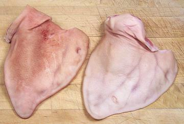
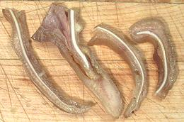

Pig Ears

Pig ears are eaten in almost every culture that eats pork - except for
"regular Americans", who tend to be uncomfortable eating any part of an
animal that resembles part of an animal.
The texture of pig ears is unusual. When cooked, the outside is firm
but gelatinous, with a thin white crunchy core. The photo specimens were
about 8-3/4 inches long, 6-5/8 inches wide and weighed a little over 12
ounces each.
More on Cuts of Pork and
Pigs.

The photo at left shows typical pig ear cross sections, after cooking.
The outer layer skin can be cooked from firm to soft and the white
cartilage will remain crunchy, but it isn't hard to chew.
Buying:
Pig ears can be found in markets serving
Philippine, Chinese, Southeast Asian and Mexican communities. They
should have little odor and the skin should be firm on both sides -
if you can scratch it off easily with a fingernail the ear is spoiled.
Cooking:
Pig ears should be par boiled in boiling water
for about 10 minutes and then rinsed. Clean the pot, fill it with plenty
of water and the pig ears. Bring it to a boil, then simmer covered for
about 1 hour. You'll need a big pot because they tend to curl a bit while
cooking. Before slicing you can dig out any fat deposits at the root
end.
ap_earz 090728 - www.clovegarden.com
©Andrew Grygus - agryg@clovegaden.com - Photos on this
page not otherwise credited are © cg1 -
Linking to and non-commercial use of this page permitted